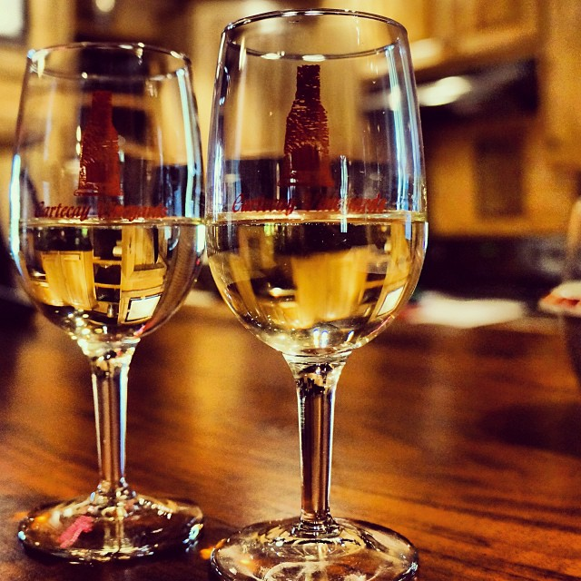
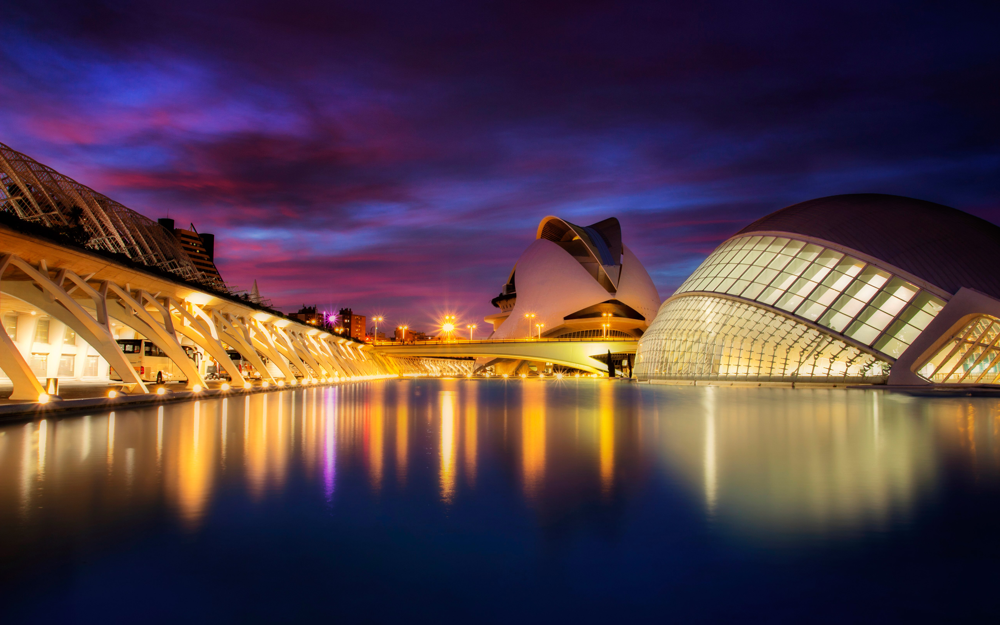
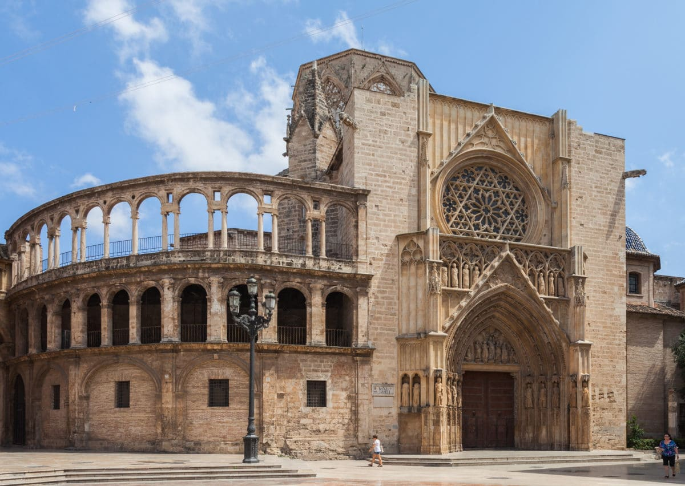
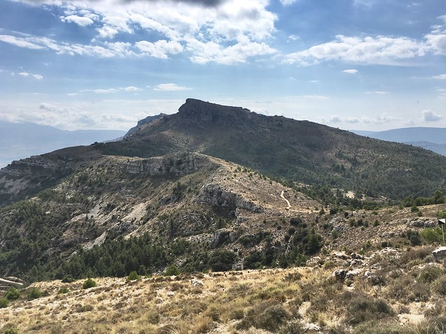
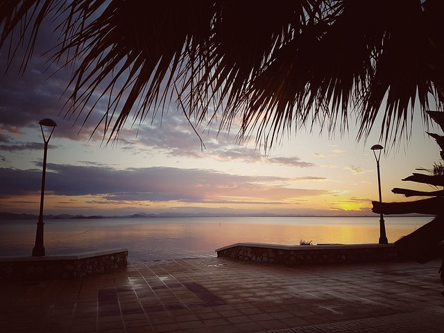
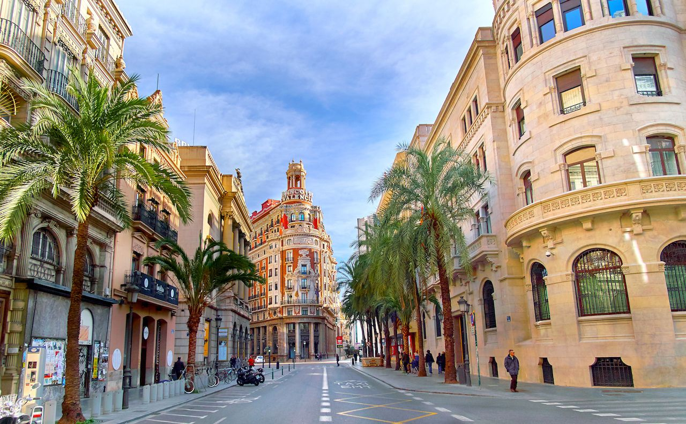

Wine
Valencia is one of Spain's 17 administrative regions. The paella and oranges from this region are more known than its wine. Located on Spain's east coast, it is Spain's third-largest and the Mediterranean's largest port. The Valencia Denominacion de Origen wine title covers 13,000 hectares (32,000 acres). Clarino lies about 65 kilometers to the southwest of Valencia produces red wines made from the Monastrell, Tempranillo, Cabernet Sauvignon and Merlot grape varieties which are the specialty there. Evidence from archeologists suggests that winemaking in Valencia dates back more than a thousand years. Many Valencia wineries have updated their winemaking techniques are now producing modern, fresh, oak-aged reds in line with contemporary wine fashion.
Back to Top

City of the arts and sciences
This attraction is a collection of interesting ultra-modern structures. The structure was started in the mid-90s and finished in 2005. Within the modern structures are family attractions like a planetarium, IMAX Theater and a botanical garden. It is located at the end of the former riverbed of the river Turia, which was drained and rerouted after a catastrophic flood in 1957.
Back to Top

Valencia Cathedral
The cathedral dates back to the 13th and 14th centuries with renaissance, baroque and classical modifications made over the year. You’re able to Go inside to see 15th-century renaissance paintings by artists such as the Valencian, Jacomart as well as several from Rome commissioned by Pope Alexander VI. You’re also able to see the El Miguelete from the cathedral as well.
Back to Top

Serra Mariola Natural Park
The Serra Mariola Natural Park is a mountain range in the Valencian Community, Spain. It has a rectangular shape and altitudes higher than 1,000 meters, the highest peak being the Montcabrer, at 1,389 meters high. The Serra is predominantly composed of limestone and the climate is largely Mediterranean. Covering these mountain ranges are some 200 or more different aromatic and medicinal plants with hundreds of different trees, which include a variety of yew unique to this area.
he park includes the towns and villages of Agres, Alcoi, Alfafara, Banyeres de Mariola, Bocairent, Cocentaina, and Muro de Alcoy. Its landscapes have always been a treat for locals and visitors alike. This landscape is a legacy of the traditional exploitation of the rich natural resources carried out over by time by “nevaters”, shepherds, and lumberjacks.
Back to Top

La Manga del Mar Menor
La Manga del Mar Menor is a seaside spit of Mar Menor in the Region of Murcia, Spain located just over 3 hours from Valencia. The strip is 21 km long and 100 meters wide (average), separating the Mediterranean Sea from the Mar Menor (Minor Sea) lagoon, from Cabo de Palos to the Punta del Mojón.Playa del Morrongo is Benicarlo’s flagship beach and lies alongside the Fishing Port and Marina. It is ideal for families with its fine sand backed by a varied range of hotels, restaurants, bars, and cafeterias.
Back to Top

City of Madrid
Madrid is vast city full of energy and culture. Artistically the city is at the top in all of Europe. Madrid is full of historic buildings and beautiful landmarks that are scattered all throughout the city like the Royal Palace that was built in the 1700s for King Phillip V or the Gran Via which is a enteraintment and shopping center of all of Madrid. Even with all of this the true pride and joy of Mardid is it's love of soccer which is held and watched at Santiago Bernabéu Stadium.
Back to Top

Culture in Valencia
Valencia has a deep and complex culture created by the diverse range of people who havesettles on its land. From the Roman theatre of the settlement of Sagunto to the fertile plains backed by hilltop fortresses. Or from the eclectic blends of ancient and modern architecture in its principal cities Valencia’s community has many cultural factors to show its visitors. As of Today, it is a powerhouse of modern culture and innovation, and with museums, art galleries, concert halls and the opera house of Valencia it plays an important part the cultural life of Europe as a whole. The main language spoken here is Spanish. Also the food of Valencia is a staple on why people come to visit

Valencia Cuisine
The delicious fish and sea food from the waters of the Mediterranean, the rich agricultural produce of the coastal plains and the wild game of the mountain areas are the vital elements of the widely diverse cuisine of Valencia. This with the influences from Phoenicians and Greeks to Romans and Arabs, has led to the creation of a complex and delicious cuisine for Valencia. practically every town and village has its own specialty, from the tasty embutidos or charcuterie of the high country, to the paellas and other rice dishes of the areas close to the coast. Valencia has a famous dish called the “paella valenciana” is made up of chicken, rabbit and vegetables. Vines for wine have been cultivated in the region since Neolithic times, and the cultivation of the grapes and the process of wine production refined over the centuries. A sparkling wine made in Valenciarecently was voted the best amongst its class in an international competition!
Back to Top